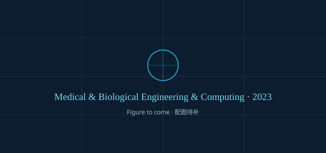
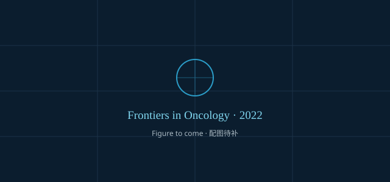

By Application · 04
Computational Pathology
Open platforms and deep learning for digital pathology: nucleus and gland segmentation, gigapixel whole-slide classification, molecular-histological correlations across 13 healthy tissues, and domain adaptation across scanners and stains.
Overview
Open platforms and deep learning for digital pathology: nucleus and gland segmentation, gigapixel whole-slide classification, molecular-histological correlations across 13 healthy tissues, and domain adaptation across scanners and stains.
- Open-source computational histopathology platform (IEEE Access 2021)
- Molecular-histological correlations across 13 healthy tissues
- Comprehensive review of digital and intelligent pathology (2025)
07 · Selected work
Selected work
Each card: figure on top, key points below.
An open source platform for computational histopathology
IEEE Access · 2021
- Open-source platform for computational histopathology.
- Reused in multiple downstream studies.
Histology image analysis of 13 healthy tissues reveals molecular-histological correlations
Scientific Reports · 2025
- Systematic histology image analysis of 13 healthy tissues.
- Quantitative molecular-histological correlations.
Computational pathology: A comprehensive review of recent developments in digital and intelligent pathology
Intelligent Oncology · 2025
- Comprehensive review of digital and intelligent pathology.
- Roadmap from digitization to AI-driven diagnosis.

Evaluation of Nucleus Segmentation in Digital Pathology Images through Large Scale Image Synthesis
SPIE Medical Imaging · 2017
- Large-scale synthetic images with ground truth for segmentation evaluation.
- Systematic benchmarking of nucleus segmentation methods.

Expectation-Maximization algorithm leads to domain adaptation for a perineural invasion and nerve extraction task in whole slide digital pathology images
Medical & Biological Engineering & Computing · 2023
- EM-based domain adaptation across scanners and stains.
- Perineural invasion detection and nerve extraction.
Efficient Multiple Instance Convolutional Neural Networks for Gigapixel Resolution Image Classification
IEEE CVPR · 2016
- Multiple-instance CNNs for gigapixel whole-slide classification.
- Widely cited approach to whole-slide image analysis.

Deep Learning-Based Classification of Cancer Cell in Leptomeningeal Metastasis on Cytomorphologic Features of Cerebrospinal Fluid
Frontiers in Oncology · 2022
- Deep learning classification of cancer cells in cerebrospinal fluid.
- Cytomorphology-based decision support for leptomeningeal metastasis.